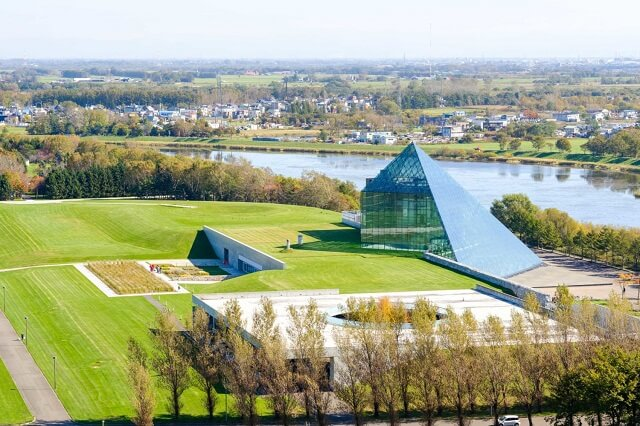
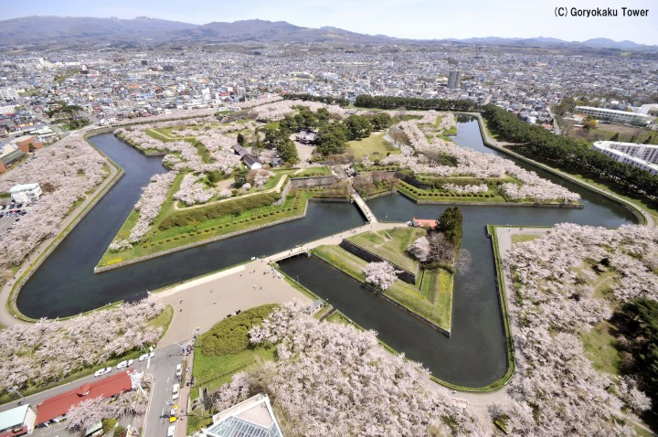
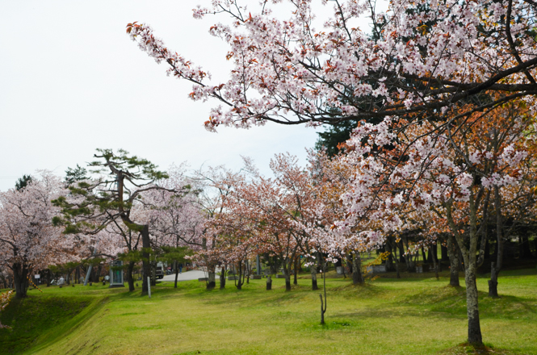

Eventos
Chitose and Lake Shikotsu Ice Festival
Hakodate Christmas Fantasy
Otaru Snow Light Path Festival
Yosakoi Soran Festival
Pronóstico de temporada de flor de cerezo
Las fechas en que comienzan a florecen los cerezos, y cuando están en condiciones óptimas, se enlistan a continuación para cada región.
| Fecha promedio de inicio | Fecha promedio de plena floración | |
| Sapporo | 3 de Mayo | 7 de Mayo |
|---|---|---|
| Hakodate | 30 de Abril | 4 de Mayo |
| Asahikawa | 5 de Mayo | 7 de Mayo |
Sapporo: Disfruta de las flores en el magnífico Parque Moerenuma
Ubicado en la ciudad más grande de Hokkaido, Sapporo, el Parque Moerenuma tiene un tamaño de 1,880,000 metros cuadrados. Está rodeado de montañas con formas geométricas, y cuenta con fuentes de agua únicas y juegos infantiles. El afamado escultor Isamu Noguchi diseñó el parque, basado en el concepto de una sola escultura.
Equipado con juegos infantiles e instalaciones inspiradas en el arte moderno, el parque es divertido no solo para niños, sino también para adultos. Las flores de cerezo florecen en la primavera, y las áreas de juego con agua y las fuentes se abren en el verano. Puedes ver el follaje en el otoño y en invierno puedes esquiar a o deslizarte en trineo en el campo del parque cubierto de nieve. El Parque Moerenuma se puede disfrutar en cualquier época del año.
Hakodate: Contempla las flores de cerezo desde la torre Goryokaku
La Torre Goryokaku es un famoso observatorio en Hakodate, Hokkaido. Desde la parte superior, puedes contemplar aproximadamente 1.600 cerezos dentro del Parque Goryokaku en forma de estrella.
En primavera, la vista del parque se transforma en un delicado color rosa. El observatorio también contiene un espacio de exhibición para aprender sobre la historia de Goryokaku, y tiene un piso transparente hecho con vidrio reforzado. Con restaurantes, puestos de café y una tienda de helados dentro de las instalaciones, puede relajarte y disfrutar del paisaje.
Asahikawa: Parque Asahikawa, ubicado justo al lado del zoológico
El se puede disfrutar de muchas maneras, desde hacer un picnic en la primavera hasta ver el follaje en el otoño. También puedes ver los cerezos florecer aquí. El parque comenzó con 1,000 cerezos y ahora alberga 3,500 árboles que tiñen el parque en tonos rosados.
El parque se ilumina por la noche, creando un efecto mágico con los cerezos en flor. Ya que está justo al lado del zoológico de Asahikawa, puedes disfrutar de hermosas flores y lindos animales juntos.
